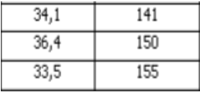

En este documento veremos algunos aspectos adicionales y básicos del uso de PHP, como la gestión de arrays y errores.
1. Uso de arrays en PHP
Las tablas o arrays nos permiten almacenar varios datos en una sola variable, de forma que podemos acceder a esos datos utilizando distintos tipos de índices. En PHP existen tres tipos de arrays:
- Numéricos: la posición que ocupa cada elemento en el array la indica un número, y podemos acceder a esa posición indicando ese número entre corchetes. Las posiciones empiezan a numerarse desde la 0.
- Asociativos: la posición que ocupa cada elemento en la lista viene dada por un nombre, y podemos localizar cada elemento a través del nombre que le hemos dado, llamado clave
- Mixtos: son arrays de varias dimensiones, donde en algunas se utilizan índices numéricos y en otras índices asociativos.
1.1. Arrays numéricos
Estos arrays podemos crearlos de tres formas posibles:
- Indicando entre paréntesis sus elementos, y anteponiendo la palabra
array
$tabla = array('Uno', 'Dos', 'Tres');- Indicando a mano el índice que queremos rellenar, y el valor que va a tener (los índices intermedios que queden sin valor se quedarán como huecos vacíos)
$tabla[0] = 'Uno';
$tabla[1] = 'Dos';
$tabla[2] = 'Tres';- Indicando el nombre del array con corchetes vacíos cada vez que queramos añadir un elemento. Así, se añade al final de los que ya existen:
$tabla[] = 'Uno';
$tabla[] = 'Dos';
$tabla[] = 'Tres';Después, para sacar por pantalla algún valor, o usarlo en alguna expresión, pondremos el nombre del array y, entre corchetes, la posición que queremos:
echo $tabla[1]; // Sacaría 'Dos' en los casos anteriores1.2. Arrays asociativos
En este caso, al crear el array debemos indicar, además de cada valor, la clave que le vamos a asociar, y por la que lo podemos encontrar, separados por el símbolo “=>”. Por ejemplo, este array guarda para cada nombre de alumno su nota:
$notas = array('Manuel García'=>8.5, 'Ana López'=>7, 'Juan Solís'=>9);También podemos rellenarlo, como en el caso anterior, indicando entre corchetes cada clave, y luego su valor:
$notas['Manuel García'] = 8.5;
$notas['Ana López'] = 7;
...Después, si queremos sacar la nota del alumno Manuel García, por ejemplo, pondremos algo como:
echo $notas['Manuel García'];En este tipo de arrays no podremos usar índices numéricos, porque no hay posiciones numéricas.
1.3. Arrays multidimensionales
Los arrays creados anteriormente son unidimensionales (sólo hay una lista o fila de elementos). Pero podemos tener tantas dimensiones como queramos. Es habitual encontrarnos con arrays bidimensionales (tablas), para almacenar información. En este caso, tendremos un corchete para cada dimensión. Por ejemplo, para crear una tabla como la siguiente…

… necesitaremos un código como este:
$tabla[0][0] = 34.1;
$tabla[0][1] = 141;
$tabla[1][0] = 36.4;
$tabla[1][1] = 150;
$tabla[2][0] = 33.5;
$tabla[2][1] = 155;También podemos tener arrays multidimensionales de tipo asociativo, o array mixtos (donde algunas dimensiones son numéricas y otras asociativas). Por ejemplo:
$tabla2 =
array(
array('nombre' => 'Juan García',
'dni'=> '11111111A',
'idiomas' => array('inglés', 'valenciano', 'español')
),
array('nombre' => 'Elisa Rodríguez',
'dni' => '22222222B',
'idiomas' => array('francés', 'español')
)
);Podríamos mostrar el segundo idioma hablado por la segunda persona con:
echo $tabla2[1]['idiomas'][1];Podemos crear igualmente estos arrays usando corchetes, definiendo lo que queremos en cada dimensión:
$tabla2[0]['nombre'] = 'Juan García';
$tabla2[0]['dni'] = '11111111A';
$tabla2[0]['idiomas'][0] = 'inglés';
$tabla2[0]['idiomas'][1] = 'valenciano';
...1.4. Recorrido de arrays
Para recorrer arrays unidimensionales podemos utilizar la expresión foreach, que nos devuelve el valor de cada posición, independiente de si es un array numérico o asociativo:
foreach ($notas as $nota)
{
echo $nota;
}También podemos usar una estructura for que cuente hasta el tamaño del array (función count):
for($i = 0; $i < count($notas); $i++)
{
echo $notas[$i];
}Para arrays asociativos, también podemos usar esta instrucción foreach, indicando en la parte derecha del as dos variables (una para la clave y otra para el valor):
foreach ($notas as $alumno=>$nota)
{
echo "El alumno $alumno tiene un $nota";
}En el caso de arrays bidimensionales numéricos, para recorrer todos los elementos de un array como el de la tabla numérica anterior, necesitaremos un doble bucle (también llamado bucle anidado): uno que recorra las filas, y otro las columnas:
// Filas
for ($i = 0; $i < count($tabla); $i++)
{
// Columnas
for ($j = 0; $j < count($tabla[0]); $j++)
{
echo $tabla[$i][$j];
}
}1.5. Funciones para arrays
PHP dispone de varias funciones útiles a la hora de manipular arrays. Algunas de las más habituales son:
- count(array) nos indica cuántos elementos tiene el array. Es útil para utilizarlo en bucles y saber cuántas repeticiones podemos hacer sobre el array.
- sort(array) y rsort(array) ordenan y reindexan un array numérico (la segunda en orden decreciente)
- asort(array) y arsort(array) ordenan y reindexan un array asociativo (la segunda en orden decreciente), por sus valores.
- ksort(array) y krsort(array) ordenan un array asociativo por sus claves (la segunda en orden decreciente).
- usort(array, funcion) ordena un array según la función que defina el usuario como segundo parámetro.
- uasort(array, función) igual que usort() pero manteniendo las claves, ya que asort() en un array bidimensional sustituye la clave de la primera dimensión por claves numéricas de indexación estandar
- array_filter(array, funcion_filtrado) devuelve un array con los elementos del array original (pasado como parámetro) que pasan la función de filtrado indicada.
- Podemos, además, usar la función print_r para sacar la información del array de forma legible
Veamos algunos ejemplos:
$numeros = [2, 5, 3, 9, 6];
// Ordenamos un array de enteros de mayor a menor
rsort($numeros); // [9, 6, 5, 3, 2]
$notas = array('Manuel García'=>8.5, 'Ana López'=>7, 'Juan Solís'=>9);
// Ordenamos un array de alumnos y notas de menor a mayor nota
asort($notas); // Ana López = 7, Manuel García = 8.5, Juan Solís = 9
print_r($notas);
// Ordenamos un array de alumnos por nombre de menor a mayor
ksort($notas); // Ana López = 7, Juan Solís = 9, Manuel García = 8.5
print_r($notas);
$numeros = [12, 18, 5, 11, 10, 95, 3];
// Filtramos los múltiplos de 5 del array
$multiplos5 = array_filter($numeros, function($n) {
return $n % 5 == 0;
});
// $multiplos5 = [5, 10, 95]
print_r($multiplos5);
$alimentos = array(
array("nombre" => "Arroz", "precio" => 1.95),
array("nombre" => "Carne picada", "precio" => 3.45),
array("nombre" => "Tomate frito", "precio" => 2.15)
);
// Ordenamos array por precio de menor a mayor
usort($alimentos, function($item1, $item2) {
return $item1["precio"] <=> $item2["precio"];
});
print_r($alimentos);Crea una carpeta llamada 03_arrays donde colocar los ejercicios de esta sección. Define dentro una página llamada 01_tabla_multiplicar.php en tu carpeta de ejercicios. Crea en ella un array numérico bidimensional donde en cada fila almacenes la tabla de multiplicar de un número del 0 al 9. Para rellenar el array de dos dimensiones debes utlizar un bucle anidado, no lo rellenes a mano. debería quedarte un array como éste (sin sacar nada por pantalla):
| 0 | 0 | 0 | 0 | 0 | 0 | 0 | 0 | 0 | 0 | 0 |
| 0 | 1 | 2 | 3 | 4 | 5 | 6 | 7 | 8 | 9 | 10 |
| 0 | 2 | 4 | 6 | 8 | 10 | 12 | 14 | 16 | 18 | 20 |
| ... | ||||||||||
Después, recorre la tabla mostrando en la página la tabla de multiplicar de cada número, de forma que te quede algo así:
Tabla del 0:
0 x 1 = 0
0 x 2 = 0
...
Tabla del 1:
1 x 0 = 0
...Crea una página llamada 02_coches.php. Define dentro un array bidimensional mixto donde:
- La primera dimensión sea asociativa. Aquí pondremos matrículas de coches
- La segunda dimensión será numérica. En cada casilla guardaremos la marca, modelo y número de puertas del coche en cuestión. Por ejemplo, el coche con matrícula “111BCD” puede ser un “Ford” (casilla 0), modelo “Focus” (casilla 1) de 5 puertas (casilla 2).
Rellena el array con al menos 3 o 4 coches, y después utiliza las estructuras adecuadas para recorrerlo mostrando los datos de los coches ordenados por matrícula y posteriormente ordenador por marca y modelo.
2. Gestión de errores
En ocasiones podemos hacer operaciones o utilizar funciones que pueden provocar un error grave en la aplicación. Por ejemplo, una división por cero, o una lectura de un fichero que no existe. Si no controlamos esos errores, se puede “disparar” un mensaje de error en el programa que muestre su mal funcionamiento, o lo que es peor, que revele algún dato privado, como la ubicación de un fichero en el servidor, o algún nombre de usuario o contraseña. Para evitar que ciertas operaciones que puedan causar errores alteren de esa forma el funcionamiento de la aplicación web, existen varias alternativas.
2.1. Uso del operador @
El operador @ se pone delante de una operación que puede provocar error, de manera que, si lo provoca, el programa no diga nada, no se muestre ningún mensaje. Por ejemplo, si vamos a dividir dos variables sin tener en cuenta que el divisor pueda ser cero, podríamos ponerlo así:
$división = @($num1/$num2);2.2. Modificación del archivo php.ini
Para no mostrar los mensajes de error por pantalla, podemos editar el archivo de configuración de PHP (php.ini), y modificar el parámetro de configuración display_errors. Deberemos ponerlo false, off o “0” (dependiendo de la versión de PHP que tengamos), para desactivar los mensajes de error. Pero deberemos tener en cuenta que, si hacemos esto, se desactivarán para todas las aplicaciones PHP que tengamos en el servidor, por lo que no suele ser una práctica demasiado recomendable.
2.3. Uso de la instrucción die
Una tercera forma de controlar los errores que se producen en una página PHP es utilizar una instrucción die o exit en el caso de que se produzca un error en una instrucción. Por ejemplo, el siguiente código intenta ver si un fichero existe, y si no, muestra el mensaje de error indicado en la instrucción die/exit:
file_exists("fichero.txt") or die ("No se encuentra el fichero");Además, con la función die o exit deja de ejecutarse el resto de la página, con lo que termina ahí su carga. Se utiliza para instrucciones que sean de vital importancia para el funcionamiento del resto del código, y normalmente al principio de la página para no dejarla con la mitad de contenido. De lo contrario, es mejor utilizar el operador @ para ocultar errores menos importantes.
2.4. Uso de excepciones
Las excepciones son un mecanismo que podemos emplear para, en el momento en que se produzca un error en alguna parte del código, se capture automáticamente y se pueda tratar en un bloque de código aparte.
Para trabajar con excepciones, debemos colocar todo el código que puede provocar error en un bloque llamado try. Si algo falla, automáticamente se salta a un bloque contiguo llamado catch, donde podremos tratar el error y sacar el mensaje oportuno. El siguiente ejemplo trata de abrir un fichero, leerlo y guardar el contenido en un array.
try
{
$contenido = file("fich1.txt");
} catch (Exception $e) {
echo 'Se ha producido un error: ' . $e->getMessage();
}Si se produce cualquier tipo de error (por ejemplo, que no exista el fichero de lectura, o no tengamos permisos para acceder a él), se provoca un error y se va directamente al bloque catch, mostrando el mensaje de error. Podemos utilizar la variable de tipo Exception que tiene el catch como parámetro, y su método getMessage() para mostrar el error concreto que se ha producido.
También podemos usar la instrucción throw new Exception($mensaje) para provocar una excepción en el caso de que alguna comprobación que hagamos nos dé un resultado incorrecto. Así provocamos un salto al catch, o un mensaje de error en la web si no lo hacemos dentro de un try. Se utiliza también para algunas funciones que no provocan excepciones por sí mismas (como por ejemplo, file_get_contents), para provocar el error nosotros de antemano con alguna comprobación previa.
try
{
if (!file_exists("fich1.txt"))
{
throw new Exception("El fichero de entrada no existe");
}
$contenido = file_get_contents("fich1.txt");
file_put_contents("fich2.txt", $contenido);
} catch (Exception $e) {
echo 'Se ha producido un error: ' . $e->getMessage();
}Haz tres copias del Ejercicio 9 del tema anterior y las llamas,
03_copia_seguridad_arroba.php,
03_copia_seguridad_die.php y
03_copia_seguridad_excepciones.php.
En todas ellas, cambia el nombre del fichero datos.txt por uno que no exista en la carpeta
(por ejemplo, aa.txt), y controla el error que puede producirse en cada caso usando una arroba,
la instrucción die o las excepciones,
para ver cómo se controla en cada caso el error y qué hace la página.
3. Más sobre variables
Existen algunas cuestiones algo más avanzadas sobre el uso de variables en PHP que debemos conocer.
3.1. Variables globales y locales
Veremos más adelante que existen unas variables predefinidas en PHP para ciertas tareas. Por ejemplo, la variable $_REQUEST nos permitirá acceder a los datos que el usuario nos envía desde un formulario.
Otras variables que podamos crear nosotros, tendrán su ámbito según la zona donde las creemos. Por ejemplo, si creamos una variable dentro de una función, esa variable no existirá fuera de la misma, y no podremos utilizarla. Sin embargo, si creamos una variable fuera de una función, e intentamos acceder a ella dentro, podría parecer que sí es una variable global o externa a la función, pero no es así. Veamos este ejemplo:
$numero = 10;
...
function incrementaNumero()
{
$numero = $numero + 1;
echo $numero;
}
...
incrementaNumero();Si ejecutamos un código como este, el comando echo $numero nos dirá que numero vale 1, cuando todo parece indicar que debería valer 11. La razón es que la variable externa $numero no es la misma que la variable interna $numero de la función. Esta última, al no tener un valor inicial asignado, empieza por 0, y al incrementarse vale 1, pero la variable $numero externa sigue valiendo 10, nadie la ha modificado.
Si queremos poder acceder a una variable externa a una función desde dentro de una función, deberemos definir en la función que esa variable es global, de la siguiente forma:
$numero = 10;
...
function incrementaNumero()
{
global $numero;
$numero = $numero + 1;
echo $numero;
}
...
incrementaNumero();Ahora, si ejecutamos el código, sí obtendremos lo esperado: que $numero vale 11.
3.2. Closures
Los closures son un mecanismo vinculado a las funciones anónimas, mediante el cual éstas pueden utilizar elementos externos, tales como variables. Para hacer eso, se emplea la cláusula use seguida de la variable (o variables) que se quieren emplear.
$numero = 10;
$incrementaNumero = function () use ($numero)
{
$numero = $numero + 1;
echo $numero;
};
$incrementaNumero(); // 113.3. Variables variables
Una funcionalidad muy característica de PHP y que no todos los lenguajes tienen es la posibilidad de definir variables cuyo nombre es a su vez variable. Así, una variable puede tomar su nombre según el valor de otra variable. Por ejemplo:
$var1 = "uno";
$$var1 = "otro uno";La variable $var1 es una variable normal, y guarda el valor “uno”. Sin embargo, la variable $$var1 tomará su nombre según lo que valga $var1 (en este caso, se llamaría $uno). Para utilizar estas variables en instrucciones tipo echo, dentro de comillas dobles, se pone el nombre dinámico (empezando por el segundo dólar) entre llaves:
echo "La segunda variable vale ${$var1}";¿Qué utilidades puede tener esto? Puede parecer que es un mecanismo un tanto enrevesado sin demasiada utilidad pero, por ejemplo, puede ser bastante útil para hacer páginas multi-idioma. Así, nos guardaremos en diferentes variables el texto a mostrar en cada idioma, y haremos que se imprima una de ellas en función de algún parámetro adicional o variable.
<?php
$texto_es = "Bienvenido";
$texto_en = "Welcome";
$idioma = "es";
$texto = "texto_" . $idioma;
echo $$texto;
?>Crea una página en la carpeta de ejercicios llamada 04_curriculum.php donde, utilizando variables variables, muestres parte de tu currículum (por ejemplo, un párrafo con tus estudios y otro con los idiomas que hablas), tanto en español como en otro idioma que elijas.